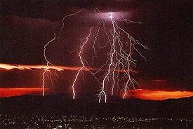
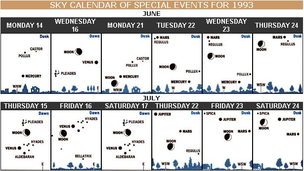

SEASONS
A remarkable meeting of planets is coming to an area near you.
I try to speak as an advocate for each season. Perhaps as you read this you're wiping the sweat from your brow and feeling enervated by yet another summer day of heat and humidity. If so, cheer up June and July are months of roses and berries, weddings and vacations, the living world at the height of its life. According to author Guy Ottewell, summer has a historic importance as well. Here's what he has to say in The Astronomical Companion (Astronomical Workshop; 1986): "Summer seems to be the oldest word [of the four names of the seasons in English], traceable back to the proto-Indo-European, and used not only for half the year but for a whole year, much as day stands for the day-night cycle; and we still understand such phrases as `Many summers ago ....' The cycle is counted by its peaks, its recurrent flashes of light." Summer is the peak by which we count and remember the year.
Seasons and Calendar
What marks the beginning of summer? Some may believe it's the annual dragging out of the barbeque grill. Others may feel it's the first dip in the local lake. In the most technical terms, however, the answer is "summer solstice." This is the time in Earth's year-long orbit when the northern half of our planet is most tilted towards the Sun. Thus, even though Earth is a little farther from the Sun in July than in January (see page 20 for almanac's "aphelion" on July 4), that isn't as important to us in the Northern Hemisphere as the fact that we are more tilted towards the Sun. Being more tilted means the Sun passes higher in our sky, making days longer. Unfortunately it also means the amount of solar radiation we receive is much greater.
Diagrams for dusk and dawn show scenes about 45-minutes after sunset or before sunrise,as viewed from 40' north latitude (approximately correct for the United States or southern Canada). "Age" of the moon is amount of time since New Moon.
-Adapted from Sky Calendar, Abrams Planetarium, Michigan State University, East Lansing, Michigan 48824.
Summer's Tributes
Summer solstice was once considered the middle of summer and is the longest day of the year (although weather systems lag and July does tend to be hotter than June). Although the solstice now usually falls on June 21, long ago Midsummer's Day was celebrated on June 24, which the Church held to be St. John's Day, the birthday of John the Baptist. June 23 was Midsummer's Eve, which was celebrated with great bonfires on hills in England.
There is an interesting plant, or family of plants, associated with John the Baptist and his day. They are called St. Johnsworts and are found throughout the United States, most commonly in the eastern half of the country. They range in height from approximately four inches to six feet tall and display five-petaled yellow flowers with a spray of stamens in the middle.
In much of our country they really do start blooming around the summer solstice. These hardy plants, which also grow in Asia and Europe, were once considered effective in warding off witches and other evils. In her book, Naming Nature (Penguin Books; 1992), writer Mary Blocksma says that the St. Johnsworts of Michigan have a local reputation as a cure-all, and some Native Americans dry the plants to use as herbal remedies.
The flowers supposedly turn purple when boiled, and the best way to distinguish them from other five-petaled yellow flowers which bloom at that same time is to look at their leaves-many St. Johnsworts have tiny transparent dots on their leaves.
Weather
If you love loud thunderstorms and great streaks of lightening, summer is the season for you. June and July are famous for their spectacular and beautiful storms. Unfortunately, with the thrill of a truly powerful storm also comes plenty of potential danger; always seek the indoors when a thunderstorm gets too near.
You can estimate the distance of lightning by counting the number of seconds between the time of its flash and the time you hear the thunder it produces: Thunder, remember, is the sound of lightning. The tremendous and sudden heat from lightening causes the air to expand rapidly and produce a boom or rumble. But light is enormously faster than sound. So if lightning occurs five miles away, we see it virtually instantly-but the thunder from it will take a number of seconds to reach us.
The basic rule of thumb is approximately five seconds for each mile (count: one-thousand and one, one thousand and two, etc.). So if you see lightning and then hear thunder from it 15 seconds later, then the lightning distance equals 15 divided by five, or three miles away which is near enough for you to step back into the house. Thoreau once wrote of thunder, "Now is Nature's grandest voice heard."
But from how far away can this grandest voice be heard? The answer may surprise you. Even at home in New Jersey, with a crowded landscape and thunderstorms weaker than the monsters of the Midwest, I have heard thunder from lightening over 20 miles distant. But some years ago, I visited a meteorologist friend who was working with a weather radar in North Dakota. One July night we used the radar to help prove we were hearing thunder from awesome lightening ...it was 50 miles away!
Astronomy
June and July 1993 bring a total lunar eclipse to some of MOTHER'S readers. Those of us with telescopes and good star charts (found in astronomy-oriented magazines and journals) can find distant Uranus and Neptune at their best. And all of us get a chance to see summer stars and a striking pairing of Mars and a star. The lunar eclipse occurs on the morning of June 4, 1993. Sadly, the Moon will set and day will come before most of the country can view more than the partial phases
(see entry in almanac, at left). Even on the Pacific Coast, total eclipse begins just before moonset and sunrise, with the Moon disappearing in bright twilight.
Only observers in Hawaii will be treated to the entire 96 minutes of totality, one of the longest lunar eclipses of the century. But don't feel left out-the whole country gets a good look at the next total lunar eclipse, which will take place this November.
A remarkable conjunction (meeting) of Mars and the heart-star of Leo, Regulus, is visible all over the world on June 21 and 22. Mars shines almost exactly as bright as Regulus in the west for a few hours after sunset. Jupiter, in the southwest after nightfall, is much brighter, but you'll need binoculars to see a little star very close to it in early June. And you really need a telescope and finder charts to locate Uranus and Neptune at their distant best together all night. If you are awake either tremendously early or very late-the hour before dawn-you will see brilliant Venus rise in the east. For lucky rural residents, there are several constellations to look for.
Low in the south after nightfall, golden-orange Antares flickers as the heart of an impressive coiling curve of stars-Scorpius the Scorpion. High in the south or southwest shines the very bright star Arcturus. The Big Dipper is getting lower in the northwest. And when you face east you'll see the vast Summer triangle of stars Vega (top), Altari (right), and Deneb (left).
I mentioned above that the summer solstice is the official start of summer in our calendar. But when it comes to weather and the living world, I believe that summer starts well before the solstice. Memorial Day, near the end of May, is the cultural start of summer in this country (for instance you can now officially wear white), and I think this is closer to when the summer of weather and living creatures begins.
For fairly sensitive nature watchers in much of the United States, the change from spring to summer is the most dramatic and rapid nature-wide change of the year. You might think that changes in spring or autumn or from winter to spring are more pronounced, but spring comes in many fits and false starts, and both spring and autumn are entire seasons of numerous transitions.
Summer erupts over us in one transition-and then remains pretty much as is. In the eastern United States this dramatic transition to summer is probably keyed more than anything else to the infamous Bermuda high. There will still be some cold air masses that bring major respites from protracted spells of hot, humid, hazy weather. But when the first Bermuda high of late May or early June gets locked into place (an earlier one won't quite set off the widespread magical change), the results are amazing: the sky looks different, the air breathes different, cicadas burst from the ground, and fireflies first light up. Insects and flowers, which even the hottest spring days couldn't bring forth, are now visible everywhere.
Almanac for June and July 1993
June
4 FULL MOON, 9:01 A.M.; total eclipse of the Moon.
5 World Environment Day
6 Trinity Sunday
7 Snowfall and accumulation across northern New England (1816).
9 Tornado killed 90 in Worcester County, Mass. (1953)
10 Corpus Christi; Venus at greatest elongation in morning sky; traditional date on which Ben Franklin flew his kite in a thunderstorm (1752)
11 King Kamehameha Day (in honor of first person to rule over a unified Hawaiian islands).
12 LAST QUARTER MOON, 1:37 A.M.
14 Flag Day; earliest sunrise at latitude 40 degrees north, 5:30 A.M. (daylight time)
17 Mercury at greatest elongation in evening sky.
19 NEW MOON, 9:52 P.m.
20 Father's Day,
21 Summer Solstice, 5 A.M.
21-22 Mars and Regulus are in conjunction
23 Midsummer's Eve; St. John's Eve
24 Midsummer's Day; St. John's Day
26 FIRST QUARTER MOON, 6:43 P.m.
27 Latest sunset at latitude 40 degrees north, 8:33 P.m. (daylight time).
July
1 Canada Day
2 Mid-point of the year (1 P.m. daylight time in your time zone).
3 FULL MOON (Thunder Moon or Hay Moon), 8:45 P.m.; traditional start of the Dog days (last until August 11)
4 Independence Day; Earth at its aphelion (farthest from Sun in space), 5 P.m.
8 Widespread frost throughout New England during both this day and next (1816)
11 LAST QUARTER MOON, 6:50 P.m.; Uranus and Neptune at opposite tonight and tomorrow morning
13 Lightning strike caused 24-hour blackout in New York City (1977)
15 St. Swithin's Day ("If it rains today, 40 days of rain will follow.")
19 NEW MOON, 7:24 A.M.
25 FIRST QUARTER MOON, 11:25 P.m.
28 Peak of Delta Aquarid meteor shower (visible from South or Southwest for several weeks around this date; watch during the last couple hours before dawn).
If you get a thrill from powerful thunderstorms, summer is your season.
Editor's note: If you wish to order
The Astronomical Companion,
please call
803/294-2208.
|
 SKY CALENDAR OF SPECIAL EVENTS FOR 1993 |
 |
|